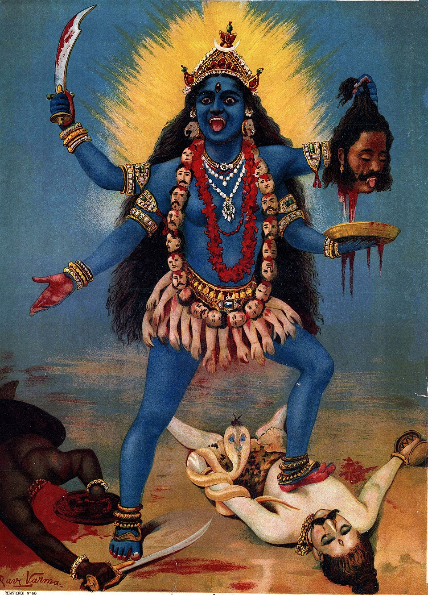

The Deity of Hindu
Raja Ravi Varma, Public Domain, Wikimedia Commons
Kālī
From Sanskrit 'kāla' meaning 'time', 'black', or 'death'; 'Kālī' is the feminine form, often translated as 'the black one' or 'she who is beyond time'. The name reflects her association with time, death, and destruction, as well as the all-encompassing nature of the divine feminine.
Predominantly Hindu tradition, especially in Shaktism and Tantric sects; also revered in some Buddhist and Jain contexts in India and Nepal. She is a central figure in Bengali culture and widely worshipped across India.
Certain modern or syncretic interpretations link Kali with figures such as Lilith or Baphomet; these identifications are not supported by traditional Hindu sources and are considered cross-cultural analogies rather than canonical equivalences.
Few divine figures embody the paradox of terror and tenderness as vividly as Kālī, the Black Mother whose fierce visage both threatens cosmic demons and nurtures devoted souls. Her wild hair, extended tongue, and garland of severed heads challenge the observer to confront death and transformation, while her dance upon Shiva's prostrate form reveals a sophisticated theological dance between destruction and consciousness. To understand Kali is to engage with the raw forces of time and change, the cosmic cycle made manifest in a goddess who is as much protector as she is destroyer.
The battlefield stretches to every horizon, soaked in blood.
The battlefield stretches to every horizon, soaked in blood. The demon Raktabija is winning — every drop of his blood that touches the ground spawns a clone. The gods are losing. The universe is losing. And then She arrives. Blue-black skin, wild hair, eyes blazing red, a skirt of severed arms, a necklace of skulls. She drinks the demon's blood before it hits the earth — every drop. She drinks and drinks and drinks, and when the last clone falls, She begins to dance. The universe trembles. The gods watch in terror. Shiva, Her husband, lies down among the corpses. She dances on his chest. And only then, when She realizes She is trampling Her beloved, does She stop.
Kali is one of the most misunderstood deities in world mythology — a goddess of destruction who is simultaneously the most fiercely protective mother in the Hindu pantheon. She is the consort of Shiva, the supreme god of destruction, but where Shiva's destruction is cosmic and abstract, Kali's is personal, visceral, and driven by love. She appears when the universe is in crisis — when demons have grown too powerful, when evil has become too entrenched — and She destroys not out of malice but out of necessity. She is the dark side of the Divine Mother, the aspect of the Goddess (Devi) that humanity calls upon when gentle methods have failed.
Kali's iconography is deliberately shocking: blue-black skin (the color of infinity, the night sky before creation), a garland of fifty severed heads (representing the fifty letters of the Sanskrit alphabet — language itself conquered), a skirt of severed arms (the karma of all beings, released), a lolling red tongue dripping with blood. She is often depicted standing on Shiva's chest — a story that explains this pose says that after destroying the demon Raktabija, Kali's bloodlust became so ecstatic that She threatened to destroy the entire universe. The gods panicked. Shiva, Her husband, lay down among the battlefield corpses. When Kali, in Her frenzy, stepped on Him and realized She was standing on Her beloved, Her tongue came out in shock and embarrassment, and She stopped. This image — the wild goddess standing on the calm god — is the central paradox of Kali worship: She is destruction, but She is also love, and love is what finally restrains Her.
Kālī is traditionally depicted as a fierce, dark-complexioned goddess with black or deep blue skin, wild disheveled hair, and a protruding tongue dripping with blood or red in color. She typically has four to ten arms holding weapons such as a sword (khadga), a trident (trishula), a severed head, and a bowl catching the blood. She wears a garland of severed heads (mala) around her neck and a skirt of severed arms. Her eyes are wide and fierce, symbolizing her terrifying aspect. Sometimes she stands or dances atop the supine Shiva, symbolizing the dynamic energy (shakti) over the passive consciousness (Shiva).
The severed heads symbolize the destruction of ego and ignorance; the blood represents life force and death; her dark color signifies the infinite womb of creation and the void; the weapons indicate her power to destroy evil and protect righteousness. The tongue symbolizes both shame and the power to consume. The standing on Shiva represents the balance of energy and consciousness.
Kālī embodies both destruction and benevolence. She is fierce and terrifying to evil forces but protective and loving towards her devotees. She represents time, change, power, and transformation, encompassing creation and destruction. She is often invoked to remove negative energies and obstacles.
As a cosmic goddess, Kali's domain is the entire universe, particularly associated with time (kala), death, destruction, and transformation. She is also linked with cremation grounds (shmashana) and wilderness, places symbolizing transitory states and the cycle of life and death.
In the Devi Mahatmya, Kali arises as the wrathful form of Durga to defeat demons, emphasizing martial and destructive powers. In Tantric traditions, she is the supreme reality, the ultimate Shakti, embodying liberation through destruction. Folk traditions often emphasize her protective and motherly aspects. Some regional variations, such as Bengali Kali, focus on her as a compassionate mother, while others stress her terrifying, destructive nature.
Kali first appears in the Devi Mahatmya (c. 5th-6th century CE), a text within the Markandeya Purana. She emerges from the brow of the goddess Durga during a battle against the demon armies of Mahishasura — literally born from divine rage. Her most famous myth concerns the demon Raktabija, who had been granted a boon: every drop of his blood that touched the ground would spawn a new demon identical to him in strength. As the gods wounded him, his blood multiplied his army. Durga, in frustration, furrowed her brow, and from that anger Kali sprang forth. She spread Her enormous tongue across the entire battlefield, catching every drop of Raktabija's blood before it could land, then devoured him and all his clones. Her victory was so complete, Her ecstasy so overwhelming, that She had to be calmed by Shiva.
Kali has the power to annihilate demons, evil spirits, and karma binding beings to samsara.
Her destructive power is purposeful and controlled, directed at preserving cosmic order (dharma).
Some texts emphasize indiscriminate destruction; others depict her as a protector who only destroys evil.
As the personification of time (Kala), Kali governs the cycle of birth, death, and rebirth and the inevitable decay of all things.
Represents cosmic time beyond human comprehension; no known limitations.
Interpretations vary between Kali as a destructive force and as a liberator transcending time.
Kali grants liberation from the cycle of birth and death to her devotees through the destruction of ego and ignorance.
Requires devotion and spiritual practice; not automatic.
Some sects stress fear of Kali versus others emphasizing grace.
Kali empowers practitioners by destroying mental and spiritual obstacles, enabling transformation.
Requires initiation and ritual knowledge in esoteric traditions.
Secular or folk views may not emphasize transformation abilities.
Kali is dark blue or black (the color of the sky at midnight, the void from which creation emerges). She has four arms: one holds a sword (destruction of ignorance), one holds a severed demon head (the ego conquered), the other two form mudras (gestures) of fearlessness and blessing. She wears a garland of fifty severed heads and a skirt of severed arms. Her hair is wild and unbound, streaming in all directions. Her eyes are red and wide with divine frenzy. Her tongue lolls out — red with blood or in embarrassment, depending on the interpretation. She wears a girdle of human arms and ornaments of bones. She is often depicted standing or dancing on the prone body of Shiva. She is naked except for Her ornaments — She is beyond shame, beyond civilization, beyond form itself. In some depictions, She is emaciated, Her ribs showing; in others, She is full-bodied, maternal, terrifying and beautiful at once.
Absolute power over destruction — She annihilates demons, evil, and falsehood with irresistible force. Immunity to all weapons and magic (She is the ultimate reality, beyond harm). The power to consume anything — blood, flesh, karma, sin — and transform it. Control over time (Kali means 'time' — She is the force of time that devours all things). She grants liberation (moksha) to those who worship Her sincerely — She destroys not just the body but the ego, the attachment, the cycle of rebirth. She is the Mother Goddess in Her most powerful aspect — Her anger is the anger of a mother defending Her children, and nothing in the universe can stand against a mother's rage. She can multiply Herself, grow to cosmic size, and perceive all things simultaneously.
Kali's behavior is defined by fierce, consuming love. She destroys demons and evil with a mother's fury. She does not negotiate or show mercy to the enemies of dharma — She annihilates them completely. But to Her devotees, She is Ma Kali — Mother — tender, protective, and generous. The image of the dark goddess with the lolling tongue is both terrifying and deeply beloved; millions of Hindus worship Kali not as a monster but as their mother, their protector, their liberator. Her ecstatic frenzy after battle is not mindless rage — it is the joy of cosmic victory, the dance of destruction that makes way for creation. She is beyond conventional morality because She is beyond the universe that contains morality; She is the source and the end of all things.
Kali's frenzy, once unleashed, is difficult to control — this is why Shiva must calm Her. She can be emotionally moved — Her love for Shiva is what brings Her back from the brink of universal destruction. She responds to sincere devotion and can be appeased by worship, sacrifice (in traditional practice, goat sacrifice; in modern, symbolic offerings), and prayer. Her power is ultimately Shiva's power — they are the divine couple, Shakti and Shiva, and one does not exist without the other. Her iconography terrifies those who do not understand Her, making Her worship difficult to spread beyond Her cultural context. In some traditions, a sincere apology and act of humility before Her image is enough to turn aside Her wrath.
Kali is often depicted as the consort or energy (Shakti) of Shiva. Their relationship symbolizes the dynamic power of creation and destruction (Kali) united with pure consciousness (Shiva).
In some traditions, Kali is an independent goddess; in others, she is a form of Parvati, Shiva's wife.
Some sects treat Kali as a separate supreme goddess, not subordinate to Shiva.
Kali is sometimes understood as an aspect of Durga, manifesting when Durga's wrath intensifies during battle.
Durga is a more gentle, motherly form; Kali is the fierce, destructive warrior form.
Some traditions distinguish Kali and Durga as separate deities with overlapping functions.
A demon defeated by Kali during the battle narrated in Devi Mahatmya, representing unchecked evil proliferation.
Raktabija appears only in this narrative primarily.
None significant.
Kali has a large following among Shakta Hindus, especially in Bengal and Assam. Devotees engage in ritual worship, chants, and festivals such as Kali Puja and Durga Puja.
Devotional practices vary widely, from benevolent motherly worship to esoteric Tantric rites.
Some Hindu traditions consider Kali too fierce for household worship.
Historically, certain Kali temples practiced animal sacrifice (goats, buffalo) as offerings to the goddess, symbolizing the destruction of ego and appeasement of fierce energies.
Contemporary practice varies; many modern temples have abandoned sacrifice. The practice has been a subject of critique and reform.
Kali’s iconography includes severed heads, blood, and weapons, symbolizing destruction and death. This imagery has been interpreted variously as literal or symbolic.
Symbolic interpretations dominate modern scholarship, but literal readings persist in some folk practices.
Tantric worship of Kali sometimes involves transgressive rituals, including use of cremation grounds, consumption of alcohol and meat, and sexual rites, viewed as taboo in orthodox Hinduism.
These practices are highly secretive and controversial; often misunderstood or sensationalized.
Durga (Durgā) is the supreme warrior goddess of the Hindu pantheon, the embodiment of Shakti (divine feminine …
HinduShivaShiva is one of the three supreme deities of Hinduism (alongside Brahma and Vishnu), the god of destruction, t…
MesopotamianLilithYou find a journal in your grandmother's attic, written in a language you don't recognize. You translate one l…
OccultBaphometYou're standing in a library that shouldn't exist, deep beneath a city you thought you knew. In the center of …
Beings of the same nature, imagined by other peoples.
This page is intentionally blank and ready for source-backed lore, versions, images, and connections.
Unclassified — research pendingYamashirohikoThis page is intentionally blank and ready for source-backed lore, versions, images, and connections.
Unclassified — research pendingAllanzuThis page is intentionally blank and ready for source-backed lore, versions, images, and connections.
Unclassified — research pendingDhruvaThis page is intentionally blank and ready for source-backed lore, versions, images, and connections.
Limited access to untranslated Tantric manuscripts restricts full understanding of esoteric aspects. Many folk oral traditions remain underdocumented outside Bengal and Assam. Contemporary reinterpretations in diaspora Hinduism and popular culture need further study. Conflicting sectarian views on Kali's nature and worship remain unresolved. Research cutoff: June 2024.
Focused on primary Sanskrit texts, major Puranas, Tantric literature, epigraphic evidence, and Bengali folk traditions up to mid-2024. Excludes speculative modern syncretisms beyond Hindu tradition.
Available in multiple English translations, e.g., Thomas Coburn (1984), 'Devi Mahatmya: The Crystallization of the Goddess Tradition'
Translated by Arthur Avalon and others; critical editions exist
Partial translations; many remain untranslated or fragmentary
Epigraphic corpora compiled in Epigraphia Indica
Collected in ethnographic studies
Kali is an independent goddess with her own origin and worship traditions.
Kalika Purana, Tantric texts that describe Kali independently; separate temples dedicated solely to Kali.
Kali is a fierce manifestation or aspect of Durga/Parvati, emerging only in specific contexts.
Devi Mahatmya depicts Kali as an emanation of Durga's wrath; many hymns identify Kali as a form of Parvati.
No absolute consensus; depends on sectarian and regional traditions.
Literal representation of bloodthirsty, violent goddess requiring animal sacrifice.
Historical temple practices including animal sacrifice; graphic iconography.
Symbolic/metaphorical representation emphasizing destruction of ego and spiritual liberation.
Philosophical interpretations in Tantra and modern Hindu thought.
Most modern scholarship favors symbolic interpretation; ritual practices vary.
Kali is Shiva’s consort/energy, dependent on him.
Common iconography with Kali standing on Shiva; Puranic texts emphasizing consort relationship.
Kali is supreme, Shiva is passive consciousness beneath her.
Tantric texts presenting Kali as the ultimate reality, with Shiva as inert principle.
Both views coexist in Hindu theology; reflects complementary metaphysics.
Key source for Kali's emergence and martial exploits.
Notable for detailed and fierce depictions emphasizing her power.
Popular festival featuring night worship, offerings, and community rituals.
The film uses the name 'Kali' metaphorically; no direct mythological connection.
Often adapted with varying fidelity; sometimes conflated with other dark goddesses.
Kali is the supreme deity of Bengali Hinduism and one of the most widely worshipped forms of the Goddess in India. She represents the Tantric understanding that creation and destruction are not opposites but the same divine act — that the mother who gives life also takes it away, and that both are expressions of love. Kali worship has been central to Indian spiritual movements (Ramakrishna was a famous devotee, experiencing ecstatic visions of Her). She appears in Indian nationalism — the image of Mother India as Kali, fierce and protective. In the West, Kali has been adopted by feminist spirituality movements, Tantric practitioners, and, controversially, appropriated as a generic 'dark goddess' divorced from Her Hindu context.
Kali appears in Western popular culture frequently, though often stripped of Her theological depth. 'Indiana Jones and the Temple of Doom' features a Kali-worshipping cult (problematic and widely criticized by Hindus). The Rolling Stones' logo is based on Kali's tongue. She appears in video games ('Smite,' 'Fate/Grand Order') as a playable character. In comics and literature, She is often reduced to a 'goddess of destruction,' missing Her maternal dimension. More respectful interpretations exist — the poem 'Kali' by Lucille Clifton, the academic work of Rachel Fell McDermott, and modern Bengali devotional music (Shyama Sangeet). The challenge for non-Hindu interpreters is to honor Kali's complexity without reducing Her to either a monster or a pop-culture icon.
Multiple independent primary sources agree on the core narratives. Primary attestation: Indian.
The Kali Yuga — the current age according to Hindu cosmology — is named after the demon Kali (unrelated to the goddess), but the linguistic coincidence has led to popular conflation.
Continue the descent
Durga (Durgā) is the supreme warrior goddess of the Hindu pantheon, the embodiment of Shakti (divine feminine …
follows the threadHinduApsaraApsaras are the celestial dancers of Hindu and Buddhist cosmology — spirits of cloud and water, born in the mo…
same traditionUnclassified — research pendingAmenophisThis page is intentionally blank and ready for source-backed lore, versions, images, and connections.
same wing of the Archive